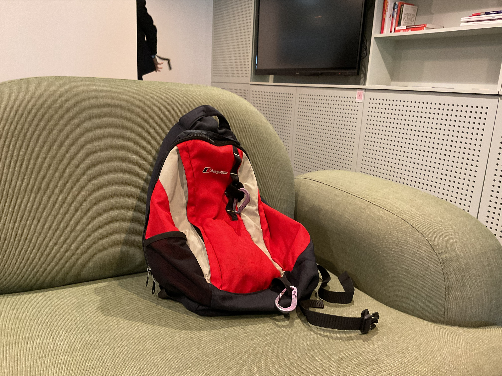

Sunglasses
Protect your eyes and the planet.
Our eco-friendly sunglasses are made from recycled plastics, combining style and sustainability for your everyday adventures.

Small but mighty — our plastic carabiner is the perfect everyday tool.
Lightweight, durable, and made from recycled ocean plastic, it’s ideal for clipping keys, bottles, or gear.
Designed to be practical and sustainable, it’s a subtle reminder that even the smallest items can make a big impact when it comes to protecting our oceans.

Protect your eyes and the planet.
Our eco-friendly sunglasses are made from recycled plastics, combining style and sustainability for your everyday adventures.